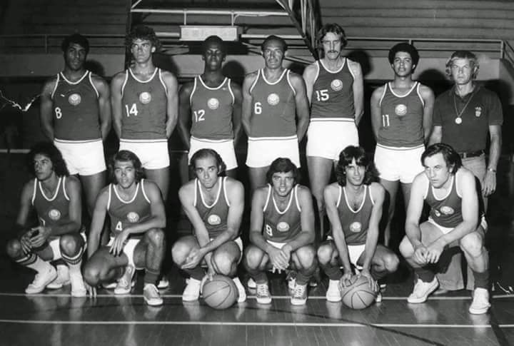
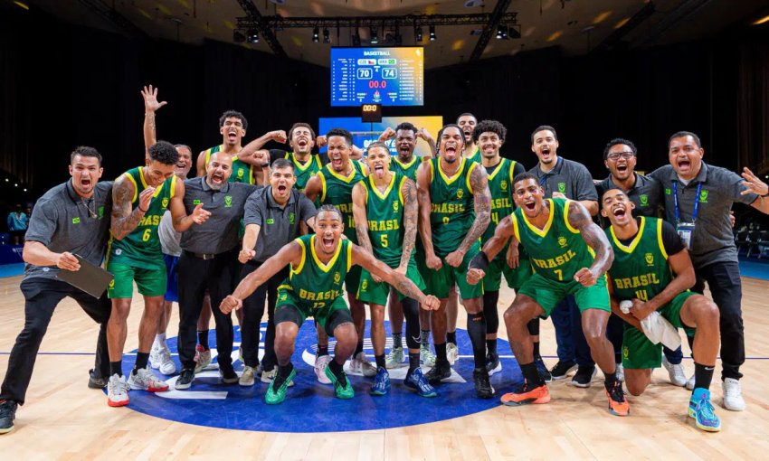
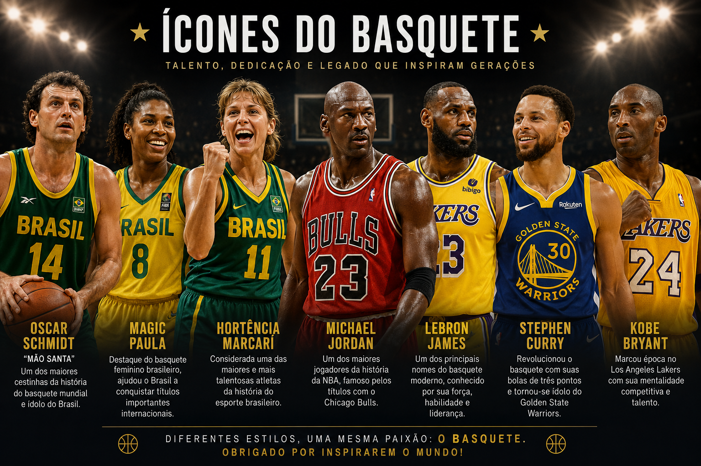
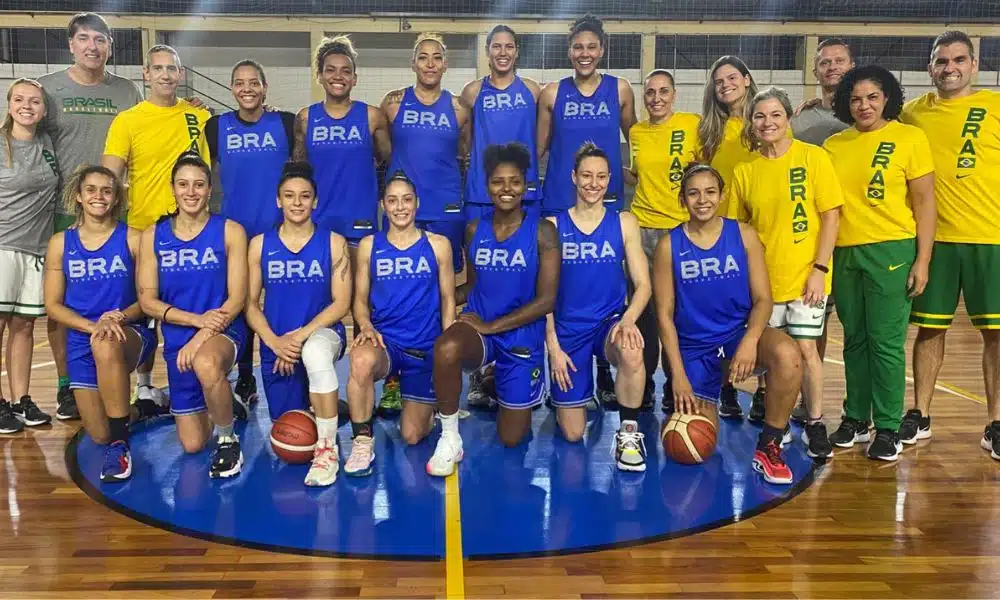
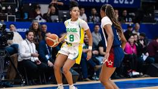
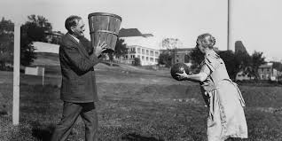

O basquete chegou ao Brasil em 1896, trazido pelo professor Augusto Shaw.
O esporte começou a ser praticado em escolas e clubes, principalmente em São Paulo.
Com o passar dos anos, o basquete se popularizou e o Brasil conquistou títulos mundiais em 1959 e 1963.
Grandes jogadores como Oscar Schmidt ajudaram a tornar o esporte mais conhecido.
Hoje, o basquete é muito praticado no país, com o NBB e participação em torneios internacionais
Alguns jogadores importantes da história do basquete brasileiro e mundial são:
* Oscar Schmidt — conhecido como “Mão Santa”, é um dos maiores cestinhas da história do basquete mundial e um dos maiores ídolos do esporte no Brasil.
* Magic Paula — destaque do basquete feminino brasileiro, ajudou o Brasil a conquistar títulos importantes internacionais.
*Hortência Marcari — considerada uma das maiores e mais talentosas atletas da história do esporte brasileiro.
* Michael Jordan — um dos maiores jogadores da história da NBA, famoso pelos títulos com o Chicago Bulls.
* LeBron James — um dos principais nomes do basquete moderno, conhecido por sua força, habilidade e liderança.
* Stephen Curry — revolucionou o basquete com suas bolas de três pontos e tornou-se ídolo do Golden State Warriors.
* Kobe Bryant — marcou época no Los Angeles Lakers com sua mentalidade competitiva e talento.
O basquete é um dos esportes mais populares do mundo e possui grandes atletas que fizeram história dentro e fora das quadras.



O cenário atual do basquete feminino destaca o crescimento das competições nacionais e internacionais,com foco em novos talentos e ligas profissionais.
Nos últimos anos, a modalidade tem recebido mais investimentos, maior cobertura da mídia e um aumento significativo no número de praticantes.
Competições importantes ajudam a revelar atletas promissoras e a elevar o nível técnico das equipes.
Além disso, seleções e clubes de diversos países vêm conquistando mais espaço e reconhecimento, incentivando a participação de jovens no esporte.
No Brasil, o basquete feminino continua formando atletas de destaque e buscando retomar posições de destaque no cenário mundial, inspirando novas gerações de jogadoras.


O basquete foi criado em 1891, em Massachusetts (EUA), pelo professor James Naismith.
que buscava uma atividade esportiva que pudesse ser praticada em locais fechados durante o inverno.
No início, as equipes eram formadas por 9 jogadores e a bola utilizada era uma bola de futebol.
As regras eram bem diferentes das atuais, pois não havia limite de arremessos.
E cada vez que uma cesta era marcada, alguém precisava subir uma escada para retirar a bola do cesto.
Com o passar do tempo, o esporte foi sendo adaptado até chegar ao formato moderno conhecido hoje.

*Cada equipe tem 5 jogadores em quadra.
*O objetivo é marcar pontos na cesta adversária.
*Cestas valem 1, 2 ou 3 pontos, dependendo da jogada.
*Vence a equipe que fizer mais pontos ao final da partida.
*Drible: quicar a bola para se deslocar.
*Passe: enviar a bola para um companheiro.
*Arremesso: tentar marcar pontos.
*Rebote: recuperar a bola após um arremesso errado.
*Defesa: impedir as ações do adversário.
*Melhora o condicionamento físico.
*Desenvolve coordenação motora e reflexos.
*Estimula o trabalho em equipe.
*Ajuda na disciplina e na socialização.
*NBA – considerada a principal liga do mundo.
*Jogos Olímpicos – reúne as melhores seleções.
*Copa do Mundo de Basquete FIBA,principal competição internacional da modalidade.
*Melhora o condicionamento físico.
*Desenvolve coordenação motora e reflexos.
*Estimula o trabalho em equipe.
*Ajuda na disciplina e na socialização.
*O Brasil é um dos países mais tradicionais do esporte fora dos Estados Unidos.
*Conquistou títulos mundiais e medalhas olímpicas.
*Grandes nomes brasileiros incluem Oscar Schmidt, Hortência Marcari e Magic Paula.
*A cesta oficial fica a 3,05 metros de altura.
*O primeiro jogo de basquete foi disputado com uma bola de futebol.
*Inicialmente, as cestas tinham fundo fechado e a bola precisava ser retirada manualmente após cada ponto.